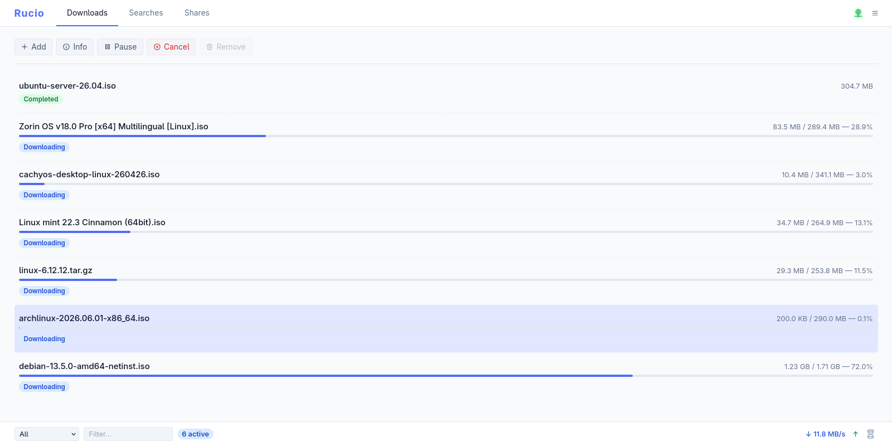
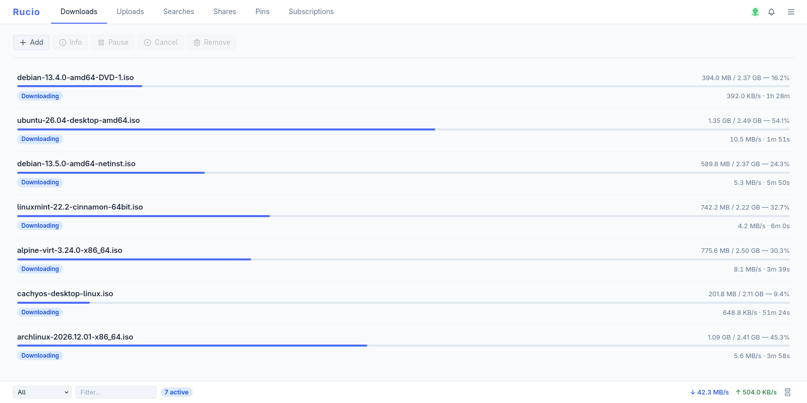
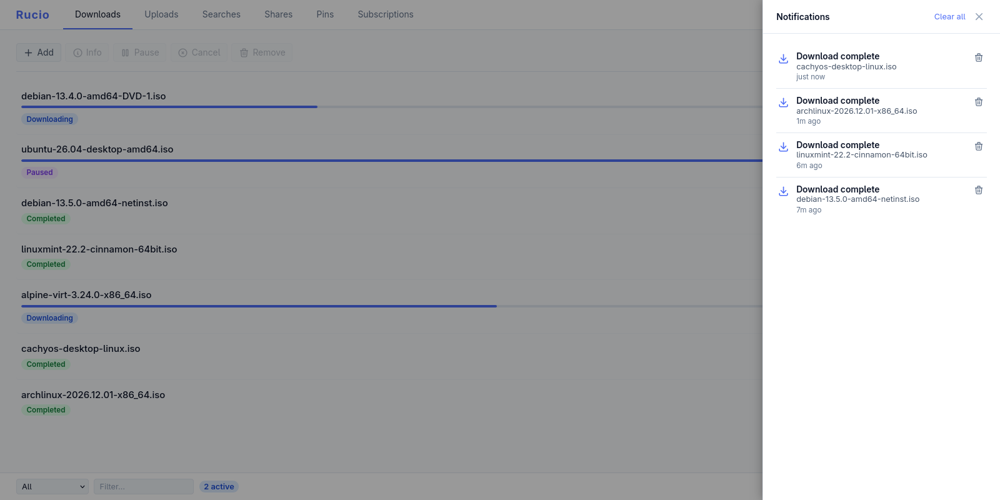

Compartición de archivos P2P descentralizada
Rucio es una aplicación de compartición de archivos escrita en Rust sobre libp2p, con compatibilidad eMule/Kad2. Sin trackers, sin servidores centrales, sin relays: los archivos se localizan mediante una tabla hash distribuida y búsqueda por palabras clave, y se transfieren directamente entre pares.






Qué hace
Totalmente descentralizado
Los pares se encuentran por mDNS en la red local y por una DHT Kademlia en internet, y buscan por palabra clave mediante Gossipsub. Los archivos se mueven después directamente entre pares: sin trackers, sin servidores centrales y sin nodos relay transportando tus datos.
Compatible con eMule / Kad2
Rucio se conecta con la red Kad de eMule existente: búsqueda por
palabras clave, localización de fuentes y descargas de enlaces
ed2k://, incluidas las conexiones ofuscadas, todo
desde el mismo cliente y junto a las transferencias nativas de
Rucio.
Panel de control web
Gestiona búsquedas, descargas, subidas y compartidos desde una interfaz web limpia servida por el propio demonio: sin procesos extra, sin instalación aparte. Añade una carpeta y cada archivo que contiene se hashea y se anuncia a la red automáticamente.
Funciona en cualquier sitio
Un solo código base, muchas formas: un demonio y una CLI para Linux y macOS, una imagen de contenedor para servidores, y una aplicación de escritorio portable para Windows que solo tienes que descomprimir y ejecutar. Las transferencias interrumpidas se reanudan donde se quedaron tras un reinicio.
Descargar
Aplicación de escritorio portable
Sin instalador y sin dependencias, ni siquiera el runtime de
Visual C++. Descomprime y ejecuta: la configuración, la base de
datos y las descargas viven junto al ejecutable, así que borrar la
carpeta elimina cualquier rastro. Descarga el
…-windows-x86_64-portable.zip de la última versión.
Demonio + CLI
Un único binario estático — rucio para la CLI,
ruciod para el demonio — con el panel web integrado y
soporte de eMule incluido. Precompilado para x86_64 y ARM64; ponlo
en tu PATH y listo.
Imagen de contenedor
Ejecuta el demonio donde sea con la imagen publicada. Mapea el
puerto 3003 para el panel web, los puertos P2P y de
eMule para que los pares puedan alcanzarte, y monta un volumen
para conservar tus datos:
docker run -d --name rucio \
-v rucio-data:/var/lib/rucio \
-p 3003:3003 \
-p 4321:4321 \
-p 4662:4662 -p 4672:4672/udp \
ghcr.io/ogarcia/rucio:latest
Después abre http://localhost:3003/ para el panel.
Compílalo tú mismo
Rucio es Rust con un frontend Leptos/WASM. Clona el repositorio y compila el demonio y la CLI:
git clone https://github.com/ogarcia/rucio
cd rucio
cargo build --release
Añade --features emule-compat,web-ui para eMule y el
panel integrado. Las notas completas de compilación, configuración
y protocolo están en la
documentación.
En Windows la aplicación es un único ejecutable autónomo. En el primer arranque, el Firewall de Windows pide permiso para acceder a la red; haz clic en Permitir para tener conectividad completa.